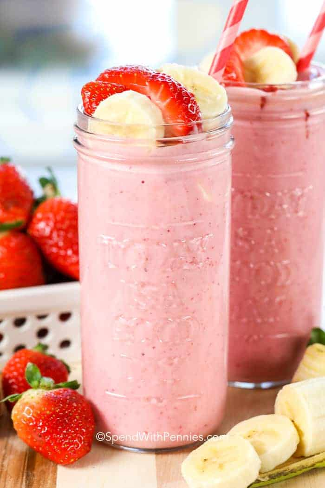

Strawberry banana smoothie

A strawberry banana smoothie is the perfect breakfast recipe!
With just a handful of ingredients, a couple of minutes, and a whirr in the blender, you've got yourself a
delicious meal on the go!
To make this smoothie even quicker, store the ingredients in individual servings in the freezer along with your
favorite add-ins for a quick snack on the go!
- Strawberries
- Banana
- Milk
- Yogurt
- Ice
- Add all the ingredients to a blender
- Whirr, adding more liquid as needed
-
Variations:
- Add orange juice in place of milk.
- For a green smoothie, add in a handful of greens and blend with the liquid until smooth before adding the
fruit. Try kale or spinach.
- Try adding different fruit like blueberries, or pineapple.
- Boost the nutrition with flax seeds, protein powder, or chia seeds.